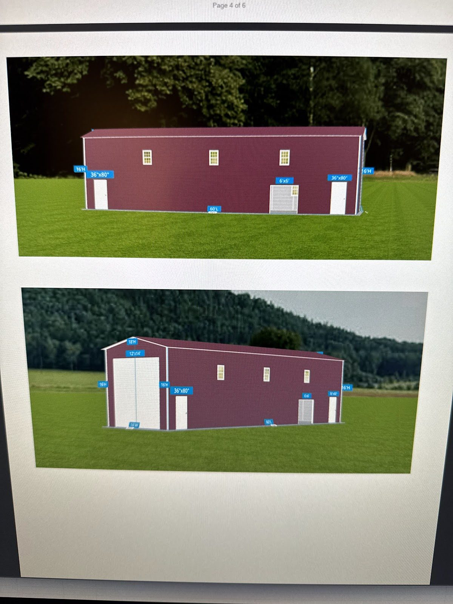
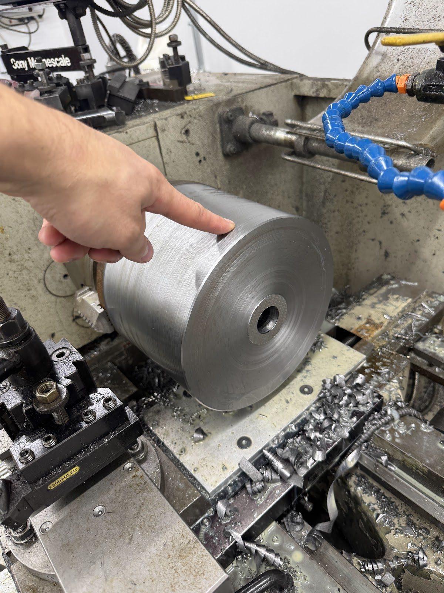
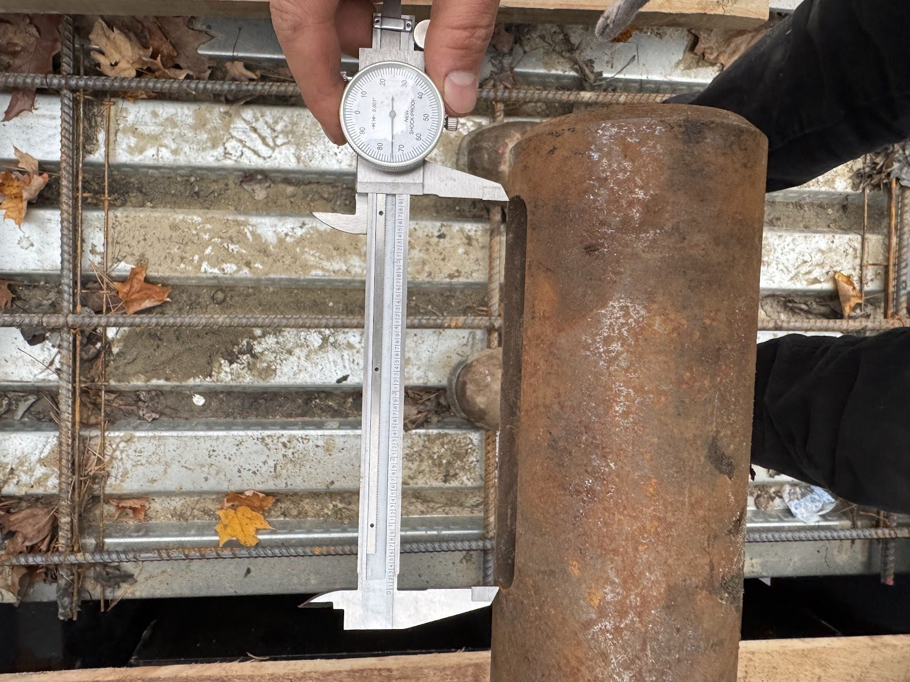
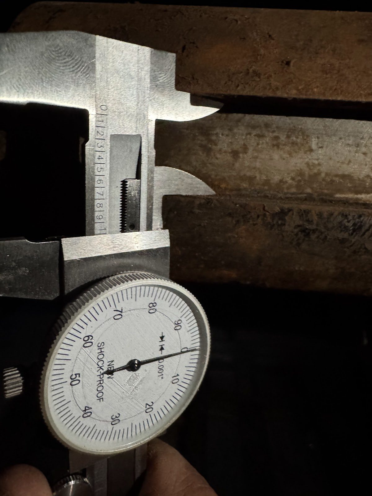
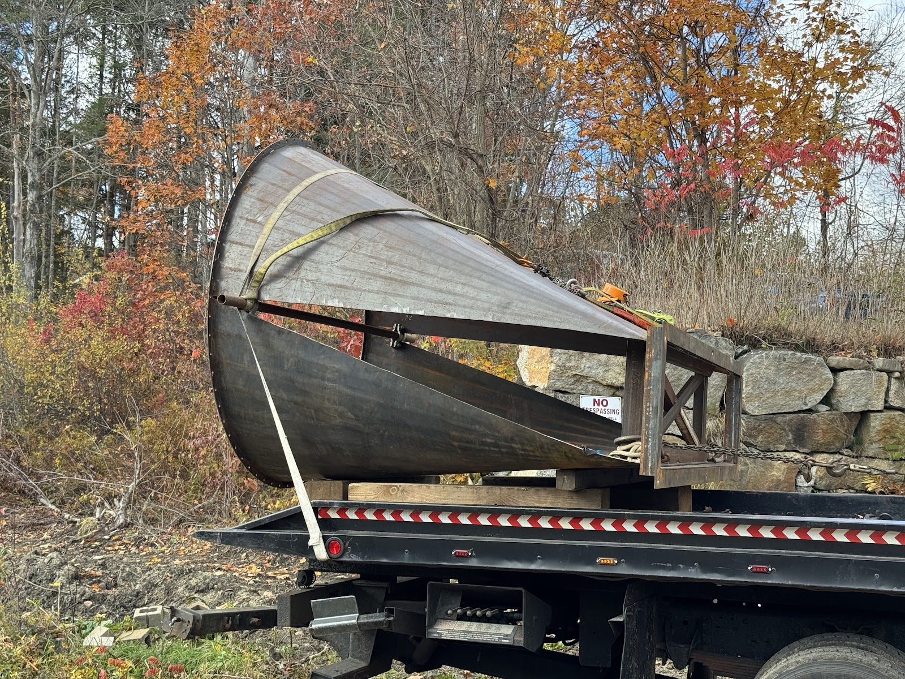

Designing the New Generator House

While the crews fight the good fight at the headgate, the drafting side of the project hit a milestone of its own: the new generator house design is complete enough to show off.
These renders show where we're headed. A compact steel-framed building sized around the equipment it protects — generator, gearbox, switchgear, and controls — sitting on the foundations we poured this spring, with the preserved fieldstone walls anchoring it visually and literally to the mill site's history.




Every dimension in this design earns its place. The building is small because unattended modern plants don't need space for operators — they need clearances for maintenance. The roof and framing are laid out so equipment can be lifted in and out without cutting the building apart. Ventilation is sized for the heat a running generator actually produces. And the control room corner will house the systems that let this plant synchronize to the grid, regulate itself, and phone home when something needs attention.
It's a strange and wonderful thing to see a rendering of a finished building while standing on a site that's currently all coffer dams, mud, and disassembled machinery. But that's how these projects work: the digital building has to be finished long before the physical one, because steel gets ordered from drawings.
Steel package goes out for fabrication over the winter. If the schedule holds, the shell goes up next season.